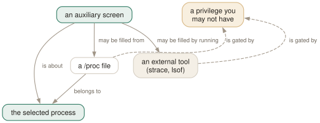

Day 07
Looking inside
Six keys that open a whole screen about one process — and htop is a launcher for other people's tools.
By the end of today you can
- go from a suspicious row to its open files, its syscalls or its environment in one keystroke
- search and filter inside those screens with the keys you already know
- read the three failure messages these screens produce, and know which are about privilege
One row is not much to go on
A row tells you a process exists, how much it is using and what state it is in. It cannot tell you what it is waiting for, which is the question you actually have when something is wrong. Six keys open a whole screen about the selected process to answer exactly that.
They all behave the same way, which is the thing worth learning once rather than six times. Each opens an auxiliary screen with a common function bar: F3 searches it, F4 filters it, F5 refreshes it, Esc returns you to the list with your selection and scroll position intact.

/proc fails on permission; a screen filled by an external tool fails on the tool not being installed. Knowing which is which turns two confusing error messages into two obvious ones.The six keys
- l — open files
- Runs
lsofagainst the one PID. File descriptors, memory-mapped libraries, sockets, the current directory. The fastest way to find out which config file a daemon actually read. - s — trace syscalls
- Attaches
strace. Live, scrolling, and it slows the traced process down substantially. F8 pauses the scrolling without detaching; F9 stops the trace. - e — environment
- Reads
/proc/[pid]/environdirectly. No external tool, no slowdown. Not mentioned anywhere in the manual page. - w — wrapped command
- The full command line, wrapped across the whole screen instead of running off the right edge. Use this instead of scrolling sideways.
- x — file locks
- The locks this process holds and is waiting for. The tool for a hang that is really a lock contention.
- b — backtrace
- A stack trace, if htop was compiled with support. Most distribution builds were not, and the key silently does nothing.
mem REG 0x22 55683489 /nix/store/zz125vwahb…
mem REG 0x22 55756459 /usr/lib/locale/local…
rtd DIR 0x25 176 256 /
txt REG 0x25 492000 57209935 /nix/store/9vbrbnpqbw…
F3Search F4Filter F5RefreshEscDone
Three ways this fails, and they mean different things
Each of these is a complete sentence about your machine, so read it rather than dismissing it.
Could not execute 'strace'. Please make sure it is available in your $PATH.
-> the tool is not installed. Install it, or use a machine where it is.
Could not read process environment.
-> a permission boundary. You do not own that process. Try under sudo.
(nothing happens at all, on b)
-> your htop was built without that feature. No amount of privilege helps.
A note on reading someone else's environment
Process environments routinely contain credentials — database URLs with passwords in them, API tokens, cloud keys. e on a process you own is looking at your own secrets; e under sudo on a shared machine is looking at everybody's.
That is worth knowing in both directions. As a debugging tool it is excellent and you should reach for it. As a thing you do on a production box with a colleague watching your screen share, think first — and remember that it is also the reason /proc/[pid]/environ is permission-gated in the first place.
Today's habit
Next time something is stuck, resist the urge to go straight to the logs. Find the process, press l, and look at what it has open. Logs tell you what a program decided to say about itself; file descriptors tell you what it is actually doing. The second is often faster and always harder to argue with.
Tomorrow: the top of the screen — what the CPU bar's coloured segments mean, and the thirty-odd meters you can put up there instead.
New vocabulary
Keys
| Key | Does |
|---|---|
| l | List open files, by running lsof against the selected process. |
| s | Trace system calls, by running strace against it. |
| e | Show the process's environment. Not in the manual page. |
| w | Show the command line wrapped across the whole screen. |
| x | Show the process's active file locks. |
| b | Show a backtrace. Only if htop was compiled with it, which it usually was not. |
| F5 | Refresh the open screen. F3 and F4 search and filter it. |
| F8 | In the strace screen: toggle auto-scroll. F9 stops the trace. |
Drillsdo these in a real terminal, today
Self-check
Answer out loud first, then unfold.
A deployment works from your shell and fails under systemd. The service is running. Which key do you press first, and why that one?
e. The overwhelmingly common cause is environment: a PATH that does not include /usr/local/bin, a missing HOME, a proxy variable your shell exports from a dotfile that systemd never reads, locale settings that change how a program parses numbers.
It is the right first move because it is cheap and conclusive: two keystrokes, no privileges beyond owning the process, and you are looking at exactly what the process actually got rather than at what a unit file says it should have got. The manual page does not mention e at all; htop's own help screen does.
You press s to trace a process and get Could not execute 'strace'. Please make sure it is available in your $PATH. But the screen opened anyway. Why did htop not just grey the key out?
Because htop has no way to know until it tries. It does not scan your $PATH at startup looking for optional helpers — it shells out when you ask, and reports what happened. The screen opening is not a promise that the trace worked.
This is the general shape of s and l: htop is a launcher for tools it does not contain. The upside is that you get the real strace and the real lsof, with their real output, rather than htop's approximation. The downside is that two of the keys on this page do nothing on a minimal container.
You attach strace to a busy process with s, the screen scrolls too fast to read, and you want to look at one line. What are your two options and what does each cost?
F8 toggles auto-scroll: the trace keeps running and keeps being collected, but the view stops chasing the bottom, so you can read and scroll. Nothing is lost.
F9 stops tracing altogether. That detaches strace from the process — which also removes the considerable slowdown that being traced imposes. On a latency-sensitive service that slowdown is the real cost of this whole screen, and it is the reason to press F9 rather than leaving the trace attached while you think.
What do the file-locks screen (x) and the open-files screen (l) tell you that the process list cannot?
Both answer “what is this process waiting for”, which no column can. A process sitting in D state with zero CPU% is completely opaque from the list — the row tells you it is stuck and nothing about why.
l shows the file descriptors, so you can see it is blocked on an NFS mount or a socket to a service that is down. x shows the locks it holds and wants, which is how you find the other process holding the one it needs — the classic two-processes-and-a-lockfile deadlock that looks like a hang.
Cheat sheet
l open files -- runs lsof on the selected PID
s trace syscalls -- runs strace; F8 pause scrolling, F9 stop tracing
e environment -- reads /proc/[pid]/environ [not in man]
w wrapped command -- the full cmdline, no sideways scrolling
x file locks -- held and waited-for; for hangs that are lock contention
b backtrace -- compile-time option; usually absent, fails silently
in EVERY one of these screens: F3 search F4 filter F5 refresh Esc back
"Could not execute 'strace'" -> tool not installed
"Could not read process environment" -> not your process; try sudo
nothing happens at all -> not compiled in
Process environments often hold credentials. e is an excellent debugging tool and a poor thing to do on a shared screen.
Everything through Day 07
Keys
| Key | Does |
|---|---|
| Ctrl-L | Redraw the screen and recalculate, without waiting for the next tick. |
| Z | Pause and resume sampling. The screen freezes; the machine does not. |
| F10q | Quit. This is also the only exit that saves your settings. |
| UpDown | Move the selection one row. Alt-k and Alt-j do the same. |
| PgUpPgDn | Move the selection a screenful at a time. |
| HomeEnd | Jump to the first or the last process in the list. |
| LeftRight | Scroll the whole list sideways. Also Alt-h and Alt-l. |
| Ctrl-A^ | Scroll back to the start of the selected process's line. |
| Ctrl-E$ | Scroll to the end of the selected process's line. |
| Alt-UpAlt-Down | Pan the view without moving the selection. Shift-Up/Shift-Down too, if your terminal lets them through. |
| p | Toggle full program paths in Command. |
| m | Toggle merging exe, comm and cmdline into Command. |
| F3/ | Incremental search: move the selection to the next match. Does not hide anything. |
| F3 | While searching: jump to the next match. Shift-F3 goes backwards. |
| F4\ | Incremental filter: hide every row that does not match. |
| Enter | In the filter prompt: keep the filter and put the prompt away. |
| Esc | In the filter prompt: clear the filter. In search: cancel it. |
| u | Open the user menu and show only one user's processes. |
| Digits | Type a PID and the selection jumps to it. Silently — there is no prompt. |
| F6><. | Open the “Sort by” menu. All three punctuation aliases work. |
| I | Invert the sort direction. The arrow in the heading flips. |
| NPMT | Sort by PID, CPU%, MEM% and TIME. The top(1) compatibility keys. |
| F5t | Toggle tree view. The F5 label changes to List while you are in it. |
| +- | Expand or collapse the selected subtree. |
| * | Expand or collapse every subtree at once. |
| F | Follow: pin the selection to this process wherever it moves. |
| Space | Tag or untag the selected process. Tagged rows stay tagged until you clear them. |
| c | Tag the selected process and all of its children. |
| U | Untag everything. The most important key on this page. |
| F9k | Open the signal menu. Defaults to 15 SIGTERM. |
| F7] | Raise priority — lower the nice value. Root only. |
| F8[ | Lower priority — raise the nice value. Anyone can do this to their own. |
| } | Raise the autogroup priority. Shift-F7. Root only. |
| { | Lower the autogroup priority. Shift-F8. |
| a | Set CPU affinity: tick the CPUs this process may run on. |
| i | Set the I/O scheduling class and priority. Not in the manual page. |
| Y | Set the scheduling policy. Not in the manual page either. |
| l | List open files, by running lsof against the selected process. |
| s | Trace system calls, by running strace against it. |
| e | Show the process's environment. Not in the manual page. |
| w | Show the command line wrapped across the whole screen. |
| x | Show the process's active file locks. |
| b | Show a backtrace. Only if htop was compiled with it, which it usually was not. |
| F5 | Refresh the open screen. F3 and F4 search and filter it. |
| F8 | In the strace screen: toggle auto-scroll. F9 stops the trace. |
Commands
| Command | Does |
|---|---|
htop | Start htop, reading ~/.config/htop/htoprc once at startup. |
htop -d 10 | Sample every 10 tenths of a second. Clamped to the range 1–100. |
htop -n 5 | Draw five frames, then exit on its own. Absent from the manual page. |
htop -V | Print the version. The -v in the SYNOPSIS does not exist. |
htop -F chrome | Start with the filter already applied. Multiple terms: -F 'nginx|php'. |
htop -p 1,843 | Show only these PIDs, and nothing else ever appears. |
htop -u | Show only your own processes. |
htop -u postgres | Show one user's processes. A numeric UID works too. |
htop -s PERCENT_MEM | Start sorted by a column. Forces list view. |
htop -s PERCENT_MEM -t | Sorted and in tree view — the one way to have both. |
htop --sort-key help | Print every sortable column name and what it means. |
htop -t=soft | Tree view with a stable cursor line. classic, soft and hard, or 0/1/2. |
htop --readonly | Disable every process- and system-changing feature for this session. |
Options
| Option | Does |
|---|---|
delay | Tenths of a second between samples in htoprc. Default 15, i.e. 1.5 s. |
M_VIRT | Address space the process has mapped. VIRT. Mostly promises, not memory. |
M_RESIDENT | Pages actually in RAM, shared ones counted in full. RES. |
M_SHARE | The part of RES that other processes also map. SHR. |
M_PRIV | Resident minus shared — what dies with the process. PRIV, a default column. |
M_SWAP | Pages of this process pushed out to swap. SWAP. |
M_PSS | Resident, but each shared page divided by its number of sharers. PSS. |
M_PSSWP | The same proportional treatment for swapped-out pages. PSSWP. |
M_EPSS | PSS plus PSSWP: the whole footprint, proportionally. EPSS. |
PERCENT_MEM | RES as a share of total RAM. MEM% — and it inherits RES's double counting. |